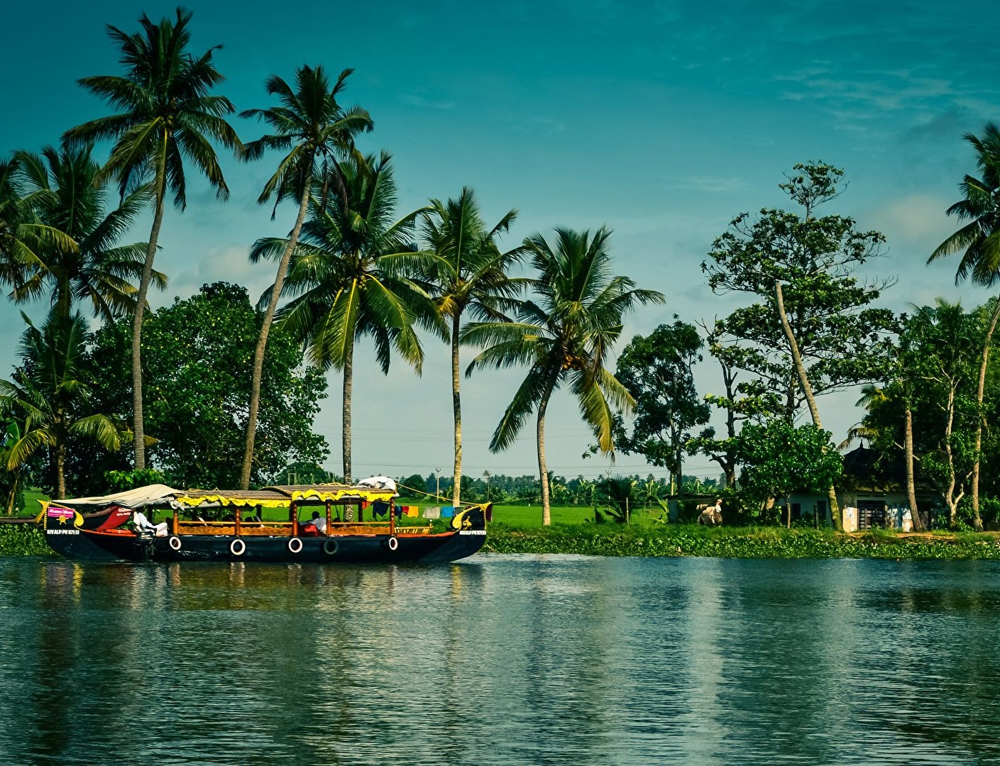

Kerala, a state situated on the tropical Malabar Coast of southwestern India, is one of the most popular tourist destinations in the country. Named as one of the ten paradises of the world by National Geographic Traveler,[1] Kerala is famous especially for its ecotourism initiatives and beautiful backwaters.[2] Its unique culture and traditions, coupled with its varied demography, have made Kerala one of the most popular tourist destinations in the world. Growing at a rate of 13.31%, the tourism industry is a major contributor to the state's economy
Until the early 1980s, Kerala was a relatively unknown destination, with most tourism circuits concentrated around the north of the country. Aggressive marketing campaigns launched by the Kerala Tourism Development Corporation—the government agency that oversees tourism prospects of the state—laid the foundation for the growth of the tourism industry. In the decades that followed, Kerala Tourism was able to transform itself into one of the niche holiday destinations in India. The tag line Kerala – God's Own Country was adopted in its tourism promotions and became a global superbrand. Kerala is regarded as one of the destinations with the highest brand recall
Kerala is a popular destination for both domestic as well as foreign tourists. Kerala is well known for its beaches, backwaters in Alappuzha and Kollam, mountain ranges and wildlife sanctuaries. Other popular attractions in the state include the beaches at Kovalam, Muzhappilangad, Bekal and Kappad; backwater tourism and lake resorts around Ashtamudi Lake, Kollam; hill stations and resorts at Munnar, Wayanad, Nelliampathi, Vagamon and Ponmudi; and national parks and wildlife sanctuaries at Wayanad, Periyar, Parambikulam, Silent Valley National Park and Eravikulam National Park. The "backwaters" region—an extensive network of interlocking rivers, lakes, and canals that centre on Vembanad Lake, also see heavy tourist traffic. Heritage sites, such as the Padmanabhapuram Palace, Hill Palace, and Mattancherry Palace, are also visited. To further promote tourism in Kerala, the Grand Kerala Shopping Festival was started by the Government of Kerala in 2007.
The state's tourism agenda promotes ecologically sustained tourism, which focuses on the local culture, wilderness adventures, volunteering and personal growth of the local population. Efforts are taken to minimize the adverse effects of traditional tourism on the natural environment and enhance the cultural integrity of local people.
Indian Tourism
contact no - +916754443266